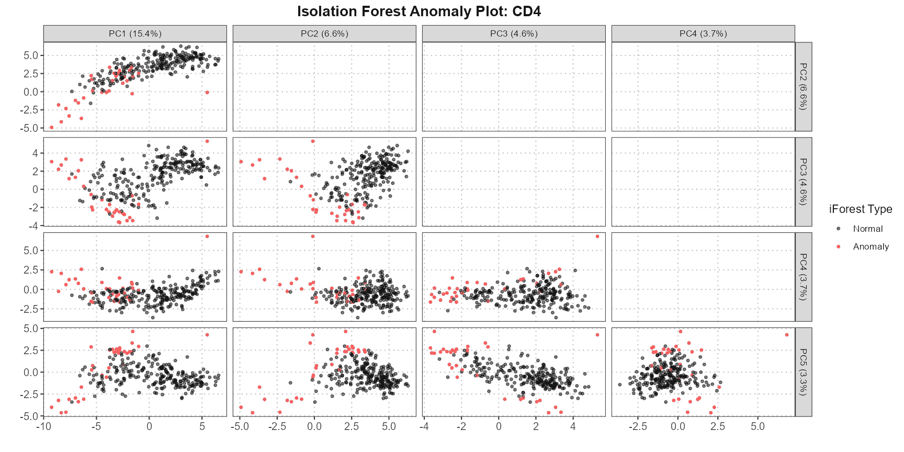
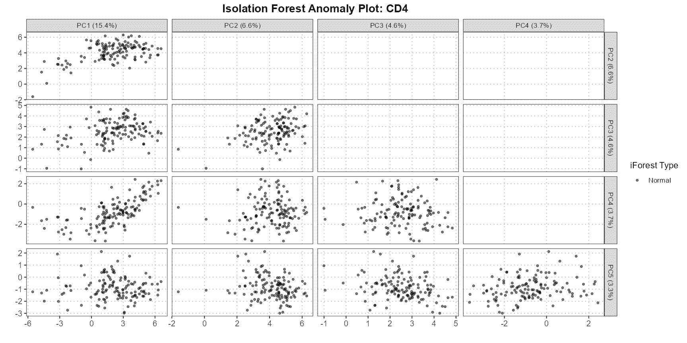
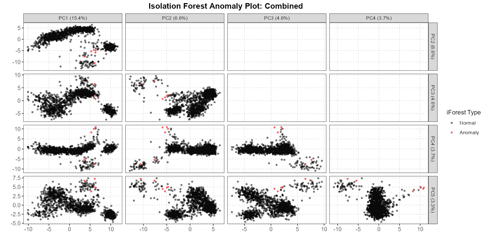

Detection of Annotation Anomalies
Anthony Christidis
Core for Computational Biomedicine, Harvard Medical Schoolanthony-alexander_christidis@hms.harvard.edu
Andrew Ghazi
Core for Computational Biomedicine, Harvard Medical SchoolSmriti Chawla
Core for Computational Biomedicine, Harvard Medical SchoolNitesh Turaga
Core for Computational Biomedicine, Harvard Medical SchoolLudwig Geistlinger
Core for Computational Biomedicine, Harvard Medical SchoolRobert Gentleman
Core for Computational Biomedicine, Harvard Medical SchoolSource:
vignettes/AnnotationAnomalies.Rmd
AnnotationAnomalies.RmdIntroduction
The scDiagnostics package provides powerful tools for
anomaly detection in single-cell data, enabling researchers to identify
and analyze outliers in complex datasets. Central to this process is the
detectAnomaly function, which integrates dimensionality
reduction through Principal Component Analysis (PCA) with the robust
capabilities of the isolation forest algorithm.
In single-cell analysis, detecting anomalies is crucial for
identifying potential data issues, such as mislabeled cells, technical
artifacts, or biologically distinct subpopulations. The
detectAnomaly function offers a versatile approach to
anomaly detection by allowing users to project data onto a PCA space and
apply isolation forests to uncover outliers. Whether working solely with
a reference dataset or comparing a query dataset against a
well-characterized reference, this function provides detailed insights
into potential anomalies.
This vignette illustrates how to effectively use the
detectAnomaly function in various scenarios. We explore
both cell-type-specific and global anomaly detection, demonstrate the
utility of integrating query data with reference data, and offer
guidance on interpreting the results. Additionally, we show how to
extend this analysis by combining anomaly detection with PCA loadings
using the calculateCellSimilarityPCA function, providing a
comprehensive toolkit for investigating the structure and quality of
single-cell data.
Whether you’re looking to enhance the accuracy of your cell type
annotations or identify subtle deviations in your data, the tools
provided by scDiagnostics will empower you to conduct
thorough and nuanced assessments of your single-cell datasets.
Preliminaries
In the context of the scDiagnostics package, the
following datasets illustrate the application of these tools:
reference_data: A curated and processed dataset containing expert-assigned cell type annotations. This dataset serves as a reference for comparison and can be used alone to detect anomalies within the reference annotations.query_data: A dataset that also includes expert-assigned cell type annotations, but additionally features annotations generated by theSingleRpackage. This allows for the comparison of expert annotations with those produced by an automated method to detect inconsistencies or anomalies.
# Load library
library(scDiagnostics)
# Load datasets
data("reference_data")
data("query_data")
# Set seed for reproducibility
set.seed(0)By using these datasets, you can leverage the package’s tools to
compare annotations between reference_data and
query_data, or analyze reference_data alone to
identify potential issues. The package’s flexibility supports various
analysis scenarios, whether you need to assess overall annotation
quality or focus on specific cell types.
Through these capabilities, scDiagnostics empowers you
to perform thorough and nuanced assessments of cell type annotations,
enhancing the accuracy and reliability of your analyses.
The detectAnomaly Function
Function Overview
Description
The detectAnomaly function integrates dimensionality
reduction via PCA with the isolation forest algorithm to detect
anomalies in single-cell data. By projecting both reference and query
datasets (if available) onto a PCA space, the function leverages the
isolation forest method to pinpoint outliers or deviations in the data.
This approach is highly versatile:
- Reference Only: Compute anomaly scores solely for the reference dataset to identify potential issues within the reference itself.
- Reference and Query: Compare the query dataset against the reference to find anomalies in the query data that may not align with the established reference.
- Global and Specific Analysis: Assess anomalies at a global level or focus on specific cell types to gain targeted insights into your data. The function also provides detailed visualizations and statistical outputs to help you interpret the anomalies detected.
Parameters
The function takes a SingleCellExperiment object as reference_data to build a PCA space and train an isolation forest model, with an optional query_data for projecting onto this PCA space for anomaly detection. You can specify cell type annotations through ref_cell_type_col and query_cell_type_col, and limit the analysis to certain cell types using the cell_types parameter. The function allows you to select specific principal components via pc_subset, adjust the number of trees with n_tree, and set an anomaly_threshold for classifying anomalies.
Return Value
The function returns several outputs: anomaly_scores indicating the likelihood of each cell being an anomaly, a logical vector (anomaly) identifying these anomalies, PCA projections for the reference data (reference_mat_subset) and optionally for the query data (query_mat_subset), and the proportion of variance explained by the selected principal components (var_explained).
detectAnomaly Examples
Anomaly Detection with Reference and Query Data
This section demonstrates how to use the detectAnomaly
function when both reference and query datasets are provided. It
includes examples of analyzing anomalies for specific cell types and
globally across all data.
Example 1: Cell-Type Specific Anomaly Detection
In this example, we analyze anomalies specifically for the “CD4” cell type. The anomaly scores are trained on the PCA projections of the “CD4” cells from the reference dataset. If query data is provided, anomaly scores for the query data are predicted based on the PCA projections of the query data onto the reference PCA space for the “CD4” cell type.
# Perform anomaly detection
anomaly_output <- detectAnomaly(reference_data = reference_data,
query_data = query_data,
ref_cell_type_col = "expert_annotation",
query_cell_type_col = "SingleR_annotation",
pc_subset = 1:5,
n_tree = 500,
anomaly_treshold = 0.6)
# Plot the output for the "CD4" cell type
plot(anomaly_output,
cell_type = "CD4",
pc_subset = 1:5,
data_type = "query") In this example, we analyze anomalies specifically for the “CD4” cell type. The anomaly scores are trained on the PCA projections of the “CD4” cells from the reference dataset. If query data is provided, anomaly scores for the query data are predicted based on the PCA projections of the query data onto the reference PCA space for the “CD4” cell type.
Notice that if we use the expert_annotation column in the query_data, there are far less cells deemed to be anomalies based on the isolation forest model.
# Perform anomaly detection
anomaly_output <- detectAnomaly(reference_data = reference_data,
query_data = query_data,
ref_cell_type_col = "expert_annotation",
query_cell_type_col = "expert_annotation",
pc_subset = 1:5,
n_tree = 500,
anomaly_treshold = 0.6)
# Plot the output for the "CD4" cell type
plot(anomaly_output,
cell_type = "CD4",
pc_subset = 1:5,
data_type = "query")
Example 2: Global Anomaly Detection
Here, we perform global anomaly detection by setting
cell_type = NULL. In this case, the isolation forest is
trained on PCA projections of all cells in the reference data combined.
The global anomaly scores are then computed for both reference and query
datasets.
# Perform anomaly detection
anomaly_output <- detectAnomaly(reference_data = reference_data,
query_data = query_data,
ref_cell_type_col = "expert_annotation",
query_cell_type_col = "SingleR_annotation",
pc_subset = 1:5,
n_tree = 500,
anomaly_treshold = 0.6)
# Plot the global anomaly scores
plot(anomaly_output,
cell_type = NULL, # Plot all cell types
pc_subset = 1:5,
data_type = "query") Setting
Setting cell_type = NULL means that the anomaly detection
is done globally. The isolation forest is trained on PCA projections of
all cells from the reference dataset. Anomaly scores are then predicted
for the query data based on these global PCA projections. The plot
provides a comprehensive view of anomalies across all cell types in the
query dataset.
Anomaly Detection with Reference Data Only
This section demonstrates how to use the detectAnomaly function when only the reference dataset is provided. It includes both cell-type specific and global anomaly detection within the reference data itself.
Example 3: Cell-Type Specific Anomaly Detection in Reference Data
In this example, we analyze anomalies for the “CD4” cell type within the reference data. The isolation forest is trained on the PCA projections of the “CD4” cells, and the anomaly scores are computed for these cells.
# Perform anomaly detection on reference data
anomaly_output_ref_only <- detectAnomaly(reference_data = reference_data,
ref_cell_type_col = "expert_annotation",
pc_subset = 1:10,
n_tree = 500,
anomaly_treshold = 0.6)
# Plot the output for the "CD4" cell type in the reference data
plot(anomaly_output_ref_only,
cell_type = "CD4",
pc_subset = 1:5,
data_type = "reference") For the “CD4” cell type, anomaly scores are trained on the PCA
projections of the “CD4” cells within the reference dataset. The plot
visualizes these anomaly scores specifically for “CD4” cells in the
reference data.
For the “CD4” cell type, anomaly scores are trained on the PCA
projections of the “CD4” cells within the reference dataset. The plot
visualizes these anomaly scores specifically for “CD4” cells in the
reference data.
Example 4: Global Anomaly Detection in Reference Data
Here, we perform global anomaly detection using only the reference dataset. The isolation forest is trained on PCA projections of all cells combined from the reference data to identify global outliers.
# Perform global anomaly detection on reference data only
anomaly_output_ref_only_global <- detectAnomaly(reference_data = reference_data,
ref_cell_type_col = "expert_annotation",
cell_types = NULL, # Global analysis
pc_subset = 1:10,
n_tree = 500,
anomaly_treshold = 0.6)
# Plot the global anomaly scores for the reference data
plot(anomaly_output_ref_only_global,
cell_type = NULL, # Plot all cell types
pc_subset = 1:5,
data_type = "reference")
Setting cell_type = NULL in the reference data analysis
results in global anomaly detection. The isolation forest is trained on
PCA projections of all cells from the reference data combined. Anomalies
are then identified across all cell types, and the plot provides a
global view of these anomalies within the reference dataset.
Integrating Anomaly Detection with Cell Similarity Analysis Using PCA Loadings
The detectAnomaly function identifies anomalous cells in
a dataset by detecting outliers based on PCA results. Once anomalies are
detected, calculateCellSimilarityPCA evaluates how these
outliers influence principal component directions. This analysis helps
determine if anomalous cells significantly impact later PCs, which
capture finer variations in the data. By combining these functions, you
can both pinpoint anomalies and understand their effect on PCA
directions, providing deeper insights into the data structure.
# Detect anomalies and select top anomalies for further analysis
anomaly_output <- detectAnomaly(reference_data = reference_data,
query_data = query_data,
ref_cell_type_col = "expert_annotation",
query_cell_type_col = "SingleR_annotation",
pc_subset = 1:10,
n_tree = 500,
anomaly_treshold = 0.5)
# Select the top 6 anomalies based on the anomaly scores
top6_anomalies <- names(sort(anomaly_output$Combined$reference_anomaly_scores,
decreasing = TRUE)[1:6])
# Calculate cosine similarity between the top anomalies and top 25 PCs
cosine_similarities <- calculateCellSimilarityPCA(reference_data,
cell_names = top6_anomalies,
pc_subset = 1:25,
n_top_vars = 50)
# Plot the cosine similarities across PCs
plot(cosine_similarities, pc_subset = 15:25)
Conclusion
This vignette section provides a comprehensive overview of how to use
the detectAnomaly function for both reference and query
datasets, with specific and global anomaly detection examples, along
with how to visualize the results using the plot method. With
calculateCellSimilarityPCA, we can assess whether cells
have a large effect on the loadings of PC vectors, affecting the
downstream analysis.
R Session Info
R version 4.4.0 (2024-04-24 ucrt)
Platform: x86_64-w64-mingw32/x64
Running under: Windows 11 x64 (build 22631)
Matrix products: default
locale:
[1] LC_COLLATE=English_United States.utf8
[2] LC_CTYPE=English_United States.utf8
[3] LC_MONETARY=English_United States.utf8
[4] LC_NUMERIC=C
[5] LC_TIME=English_United States.utf8
time zone: America/New_York
tzcode source: internal
attached base packages:
[1] stats graphics grDevices utils datasets methods base
other attached packages:
[1] scDiagnostics_0.99.6 BiocStyle_2.32.0
loaded via a namespace (and not attached):
[1] SummarizedExperiment_1.34.0 gtable_0.3.5
[3] xfun_0.44 bslib_0.7.0
[5] ggplot2_3.5.1 htmlwidgets_1.6.4
[7] Biobase_2.64.0 lattice_0.22-6
[9] generics_0.1.3 vctrs_0.6.5
[11] tools_4.4.0 stats4_4.4.0
[13] parallel_4.4.0 tibble_3.2.1
[15] fansi_1.0.6 highr_0.11
[17] pkgconfig_2.0.3 Matrix_1.7-0
[19] desc_1.4.3 S4Vectors_0.42.0
[21] lifecycle_1.0.4 GenomeInfoDbData_1.2.12
[23] farver_2.1.2 compiler_4.4.0
[25] textshaping_0.4.0 munsell_0.5.1
[27] GenomeInfoDb_1.40.1 htmltools_0.5.8.1
[29] sass_0.4.9 yaml_2.3.8
[31] pkgdown_2.0.9 pillar_1.9.0
[33] crayon_1.5.2 jquerylib_0.1.4
[35] SingleCellExperiment_1.26.0 cachem_1.1.0
[37] DelayedArray_0.30.1 abind_1.4-5
[39] tidyselect_1.2.1 digest_0.6.35
[41] dplyr_1.1.4 purrr_1.0.2
[43] bookdown_0.39 labeling_0.4.3
[45] fastmap_1.2.0 grid_4.4.0
[47] colorspace_2.1-0 cli_3.6.2
[49] SparseArray_1.4.8 magrittr_2.0.3
[51] S4Arrays_1.4.1 utf8_1.2.4
[53] withr_3.0.0 UCSC.utils_1.0.0
[55] scales_1.3.0 rmarkdown_2.27
[57] XVector_0.44.0 httr_1.4.7
[59] matrixStats_1.3.0 ragg_1.3.2
[61] isotree_0.6.1-1 memoise_2.0.1
[63] evaluate_0.23 knitr_1.46
[65] GenomicRanges_1.56.0 IRanges_2.38.0
[67] rlang_1.1.3 Rcpp_1.0.12
[69] glue_1.7.0 BiocManager_1.30.23
[71] BiocGenerics_0.50.0 rstudioapi_0.16.0
[73] jsonlite_1.8.8 R6_2.5.1
[75] MatrixGenerics_1.16.0 systemfonts_1.1.0
[77] fs_1.6.4 zlibbioc_1.50.0